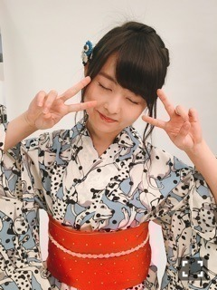
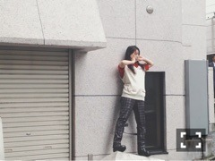

| 2016/07 31 Sun | また茶でも。731回目 |
Mステ、乃木坂46SHOW!
出演しました〜
シブヤノオトもよろしくお願いします！
RADIO FISHさんの衣装
我らもお世話になってる
BODYSONG.さんの生地使ってた！！
衣装もパフォーマンスもかっちょよかった。
フェイスボックスよい！！

帯の色に合わせた唇だよ

黒地も良いよね∠( 'ω')／
発売中のBUBKAにインタビュー載ってます。
直接的にこんなに誉めていただけるのは
滅多にないので貴重ですで、、
8月発売のEX大衆のインタビューも
続けてあったのですが、
この期間は私にとって
新たなターニングポイントになりそう、
なればいいな〜と思っています。
どちらも素直に話しています。
一時の自分をちゃんと客観視して
見つめ直すことはできました。
ただ、好き勝手にやった自分に
まったく悔いはありません。
と、言わせてください。
全部を器用にできない自分を
ゆるしてください。
自分がやりたいこと全部叶えなければ
と思いました。
まりっかはやりたいことがたくさんある。
別冊STUDYが手元に届きました〜
感激でした！撮影楽しかったなあ
写真になってより好きな世界が
ぎゅっと詰まったものになりました。
予約している方は楽しみにしててください！
STUDY本誌も素敵なので、ぜひ*\(^o^)/*

ドイツから一時帰国中の親友と
お茶した∠( 'ω')／
いつも夏に会うの！夏の楽しみ。
毎度毎度他にない刺激をもらう。
世界を見ている人、ほんとにすごい。
アクセサリー手作りしてたから
影響されて一緒にパーツ買いに行った！
久しぶりにいろいろ作ろうかな
ほら、ぎくしゃくしてるよ、ほら
真夜中に連絡しても返ってくる人たちだよ
まりか
コメント(632)
2016/07/31 14:00